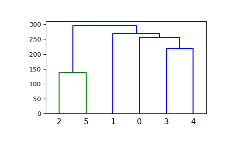
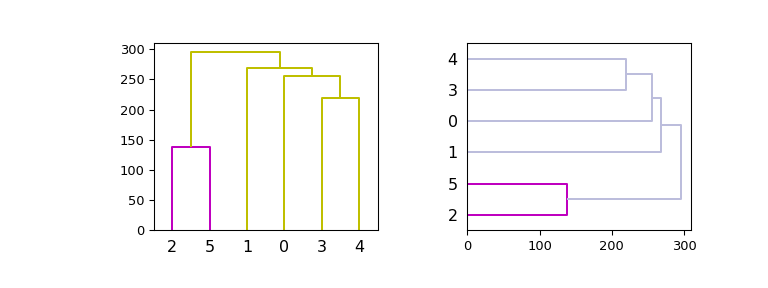

scipy.cluster.hierarchy.dendrogram¶
-
scipy.cluster.hierarchy.dendrogram(Z, p=30, truncate_mode=None, color_threshold=None, get_leaves=True, orientation='top', labels=None, count_sort=False, distance_sort=False, show_leaf_counts=True, no_plot=False, no_labels=False, leaf_font_size=None, leaf_rotation=None, leaf_label_func=None, show_contracted=False, link_color_func=None, ax=None, above_threshold_color='b')[source]¶ Plot the hierarchical clustering as a dendrogram.
The dendrogram illustrates how each cluster is composed by drawing a U-shaped link between a non-singleton cluster and its children. The top of the U-link indicates a cluster merge. The two legs of the U-link indicate which clusters were merged. The length of the two legs of the U-link represents the distance between the child clusters. It is also the cophenetic distance between original observations in the two children clusters.
- Parameters
- Zndarray
The linkage matrix encoding the hierarchical clustering to render as a dendrogram. See the
linkagefunction for more information on the format ofZ.- pint, optional
The
pparameter fortruncate_mode.- truncate_modestr, optional
The dendrogram can be hard to read when the original observation matrix from which the linkage is derived is large. Truncation is used to condense the dendrogram. There are several modes:
NoneNo truncation is performed (default). Note:
'none'is an alias forNonethat’s kept for backward compatibility.'lastp'The last
pnon-singleton clusters formed in the linkage are the only non-leaf nodes in the linkage; they correspond to rowsZ[n-p-2:end]inZ. All other non-singleton clusters are contracted into leaf nodes.'level'No more than
plevels of the dendrogram tree are displayed. A “level” includes all nodes withpmerges from the last merge.Note:
'mtica'is an alias for'level'that’s kept for backward compatibility.
- color_thresholddouble, optional
For brevity, let \(t\) be the
color_threshold. Colors all the descendent links below a cluster node \(k\) the same color if \(k\) is the first node below the cut threshold \(t\). All links connecting nodes with distances greater than or equal to the threshold are colored blue. If \(t\) is less than or equal to zero, all nodes are colored blue. Ifcolor_thresholdis None or ‘default’, corresponding with MATLAB(TM) behavior, the threshold is set to0.7*max(Z[:,2]).- get_leavesbool, optional
Includes a list
R['leaves']=Hin the result dictionary. For each \(i\),H[i] == j, cluster nodejappears in positioniin the left-to-right traversal of the leaves, where \(j < 2n-1\) and \(i < n\).- orientationstr, optional
The direction to plot the dendrogram, which can be any of the following strings:
'top'Plots the root at the top, and plot descendent links going downwards. (default).
'bottom'Plots the root at the bottom, and plot descendent links going upwards.
'left'Plots the root at the left, and plot descendent links going right.
'right'Plots the root at the right, and plot descendent links going left.
- labelsndarray, optional
By default,
labelsis None so the index of the original observation is used to label the leaf nodes. Otherwise, this is an \(n\) -sized list (or tuple). Thelabels[i]value is the text to put under the \(i\) th leaf node only if it corresponds to an original observation and not a non-singleton cluster.- count_sortstr or bool, optional
For each node n, the order (visually, from left-to-right) n’s two descendent links are plotted is determined by this parameter, which can be any of the following values:
FalseNothing is done.
'ascending'orTrueThe child with the minimum number of original objects in its cluster is plotted first.
'descending'The child with the maximum number of original objects in its cluster is plotted first.
Note,
distance_sortandcount_sortcannot both be True.- distance_sortstr or bool, optional
For each node n, the order (visually, from left-to-right) n’s two descendent links are plotted is determined by this parameter, which can be any of the following values:
FalseNothing is done.
'ascending'orTrueThe child with the minimum distance between its direct descendents is plotted first.
'descending'The child with the maximum distance between its direct descendents is plotted first.
Note
distance_sortandcount_sortcannot both be True.- show_leaf_countsbool, optional
When True, leaf nodes representing \(k>1\) original observation are labeled with the number of observations they contain in parentheses.
- no_plotbool, optional
When True, the final rendering is not performed. This is useful if only the data structures computed for the rendering are needed or if matplotlib is not available.
- no_labelsbool, optional
When True, no labels appear next to the leaf nodes in the rendering of the dendrogram.
- leaf_rotationdouble, optional
Specifies the angle (in degrees) to rotate the leaf labels. When unspecified, the rotation is based on the number of nodes in the dendrogram (default is 0).
- leaf_font_sizeint, optional
Specifies the font size (in points) of the leaf labels. When unspecified, the size based on the number of nodes in the dendrogram.
- leaf_label_funclambda or function, optional
When leaf_label_func is a callable function, for each leaf with cluster index \(k < 2n-1\). The function is expected to return a string with the label for the leaf.
Indices \(k < n\) correspond to original observations while indices \(k \geq n\) correspond to non-singleton clusters.
For example, to label singletons with their node id and non-singletons with their id, count, and inconsistency coefficient, simply do:
# First define the leaf label function. def llf(id): if id < n: return str(id) else: return '[%d %d %1.2f]' % (id, count, R[n-id,3]) # The text for the leaf nodes is going to be big so force # a rotation of 90 degrees. dendrogram(Z, leaf_label_func=llf, leaf_rotation=90)
- show_contractedbool, optional
When True the heights of non-singleton nodes contracted into a leaf node are plotted as crosses along the link connecting that leaf node. This really is only useful when truncation is used (see
truncate_modeparameter).- link_color_funccallable, optional
If given, link_color_function is called with each non-singleton id corresponding to each U-shaped link it will paint. The function is expected to return the color to paint the link, encoded as a matplotlib color string code. For example:
dendrogram(Z, link_color_func=lambda k: colors[k])
colors the direct links below each untruncated non-singleton node
kusingcolors[k].- axmatplotlib Axes instance, optional
If None and no_plot is not True, the dendrogram will be plotted on the current axes. Otherwise if no_plot is not True the dendrogram will be plotted on the given
Axesinstance. This can be useful if the dendrogram is part of a more complex figure.- above_threshold_colorstr, optional
This matplotlib color string sets the color of the links above the color_threshold. The default is ‘b’.
- Returns
- Rdict
A dictionary of data structures computed to render the dendrogram. Its has the following keys:
'color_list'A list of color names. The k’th element represents the color of the k’th link.
'icoord'and'dcoord'Each of them is a list of lists. Let
icoord = [I1, I2, ..., Ip]whereIk = [xk1, xk2, xk3, xk4]anddcoord = [D1, D2, ..., Dp]whereDk = [yk1, yk2, yk3, yk4], then the k’th link painted is(xk1, yk1)-(xk2, yk2)-(xk3, yk3)-(xk4, yk4).'ivl'A list of labels corresponding to the leaf nodes.
'leaves'For each i,
H[i] == j, cluster nodejappears in positioniin the left-to-right traversal of the leaves, where \(j < 2n-1\) and \(i < n\). Ifjis less thann, thei-th leaf node corresponds to an original observation. Otherwise, it corresponds to a non-singleton cluster.
See also
Notes
It is expected that the distances in
Z[:,2]be monotonic, otherwise crossings appear in the dendrogram.Examples
>>> from scipy.cluster import hierarchy >>> import matplotlib.pyplot as plt
A very basic example:
>>> ytdist = np.array([662., 877., 255., 412., 996., 295., 468., 268., ... 400., 754., 564., 138., 219., 869., 669.]) >>> Z = hierarchy.linkage(ytdist, 'single') >>> plt.figure() >>> dn = hierarchy.dendrogram(Z)
Now, plot in given axes, improve the color scheme and use both vertical and horizontal orientations:
>>> hierarchy.set_link_color_palette(['m', 'c', 'y', 'k']) >>> fig, axes = plt.subplots(1, 2, figsize=(8, 3)) >>> dn1 = hierarchy.dendrogram(Z, ax=axes[0], above_threshold_color='y', ... orientation='top') >>> dn2 = hierarchy.dendrogram(Z, ax=axes[1], ... above_threshold_color='#bcbddc', ... orientation='right') >>> hierarchy.set_link_color_palette(None) # reset to default after use >>> plt.show()
